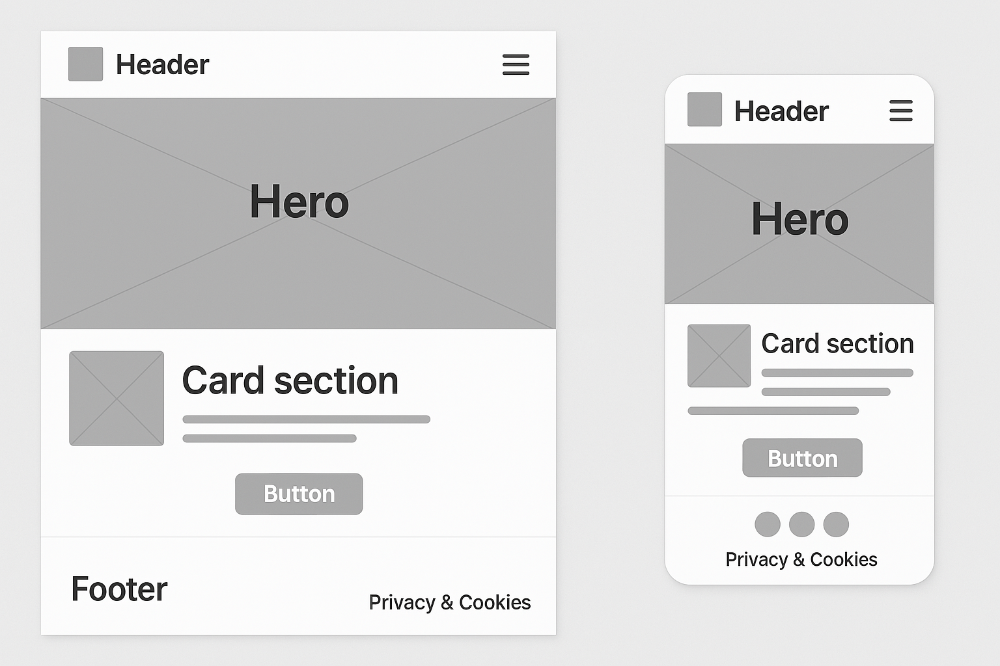

Site Name
torosfuerzarugby.com will be the name for the website because the namo of the team is Toros
Purpose
Provide information about the rugby team, its gallery, players, and upcoming events. It also connects fans to support the team.
Target Audience
Rugby fans, potential players, and anyone interested in the sport, including families and community-oriented individuals.
Content
The site will include sections for team information, coaches profiles, match schedules, a gallery of images, and a contact form for inquiries.
Scenarios
How can I contact the Toros team?
Who is the coach of the team?
What are the upcoming matches?
Where can I see the players?
Color Schema
This are the colors that will be use on the site.
03045e-023e8a-003049-669bbc-0077b6-#ffffff
Typography
The Typography was selected from Google Fonts and its name is Alumni Sans SC.
Wirefrimes
This are the Wirefrimes that will be use for the site.
